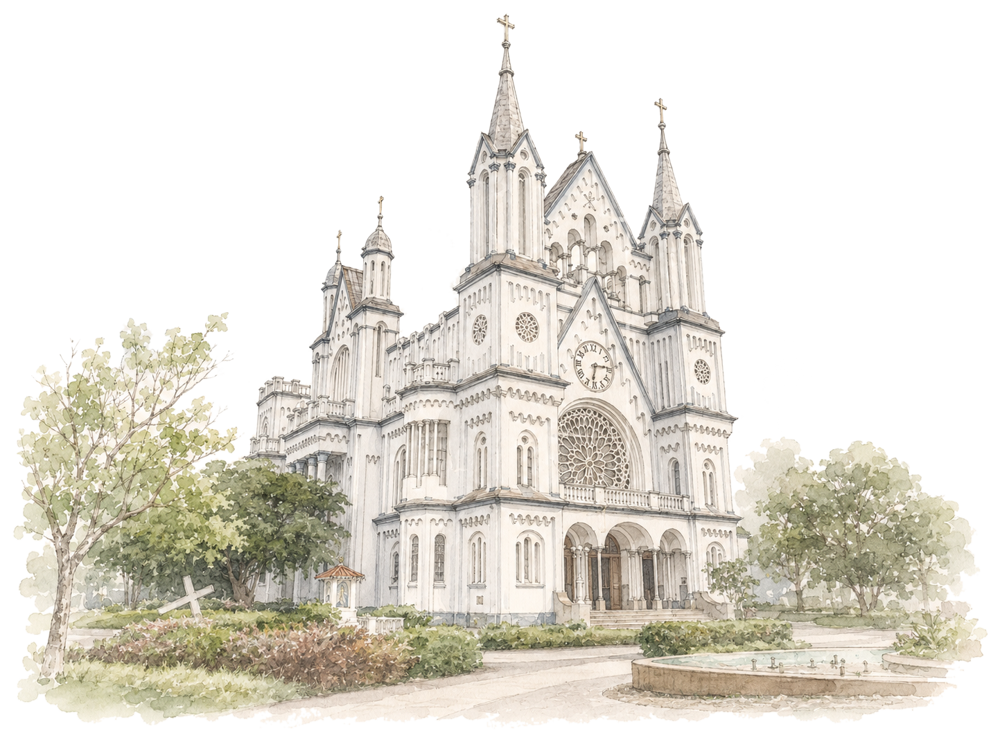
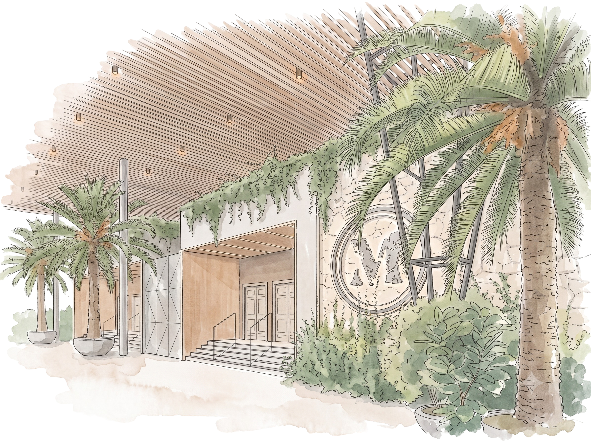
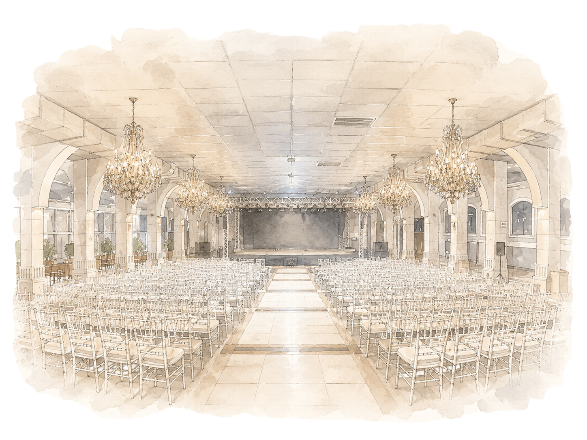

CONVITE DE FORMATURA
Licenciatura em Pedagogia
UNIAVAN · 2026/2
“A educação é um ato de amor, por isso, um ato de coragem.”
— Paulo Freire
Sinto-me honrada em convidá-los para a solenidade da minha formatura.
A celebração:
Culto Ecumênico
O Culto Ecumênico será celebrado na Igreja Matriz Paróquia Santíssimo Sacramento, no Centro de Itajaí/SC, no dia 29 de janeiro de 2027, às 21h.

Igreja Matriz Paróquia Santíssimo Sacramento
Av. Cel. Marcos Konder, Centro
Itajaí — SC
Colação de Grau e Baile de Formatura
A Colação de Grau acontecerá às 18h e o Baile de Formatura às 23h, no Espaço de Eventos Maria's, em Camboriú/SC, no dia 30 de janeiro de 2027.

Espaço de Eventos Maria's
Rua Antônio Lopes Gonçalves Bastos, 1083 — Rio Pequeno
Camboriú — SC
PROGRAMAÇÃO
Culto Ecumênico
29 de janeiro de 2027 · 21h
Igreja Matriz Paróquia Santíssimo Sacramento — Itajaí/SC

Colação de Grau
30 de janeiro de 2027 · 18h
Maria’s — Camboriú/SC
Baile de Formatura
30 de janeiro de 2027 · 23h
Maria’s — Camboriú/SC
CONFIRME SUA PRESENÇA
Será uma alegria celebrar este momento tão especial ao lado de pessoas queridas.
DÚVIDAS FREQUENTES
Algumas informações importantes para aproveitar cada momento da celebração.
No Culto Ecumênico e na Colação de Grau, não há limite de acompanhantes. Para o Baile de Formatura, a quantidade de acompanhantes deverá ser confirmada diretamente com a formanda.
Sim. Crianças podem participar do Culto Ecumênico e da Colação de Grau. Para o Baile de Formatura, menores de 18 anos precisam apresentar autorização dos responsáveis, com firma reconhecida em cartório ou assinatura realizada pelo Gov.br.
O traje para todos os eventos é social. Para o Culto Ecumênico, recomenda-se a preferência por tons claros.
A confirmação deverá ser realizada até 15 de dezembro de 2026.
Sim! Fique à vontade para registrar e compartilhar os momentos especiais da celebração.
Recomenda-se chegar com, no mínimo, 15 minutos de antecedência.
Culto Ecumênico: 21h
Colação de Grau: 18h
Baile de Formatura: 23h
Sim. O convite é individual e intransferível.
Sim. Caso precise alterar sua confirmação, entre em contato com a formanda pelo WhatsApp com, pelo menos, 15 dias de antecedência.
Um gesto de carinho
Ter você comigo neste momento tão especial já será um presente inesquecível. Se ainda assim desejar me presentear, deixo aqui a minha chave Pix:
CONTAGEM REGRESSIVA
Até o nosso primeiro grande momento
Culto Ecumênico
29 de janeiro de 2027 · 21h